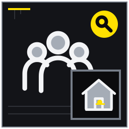
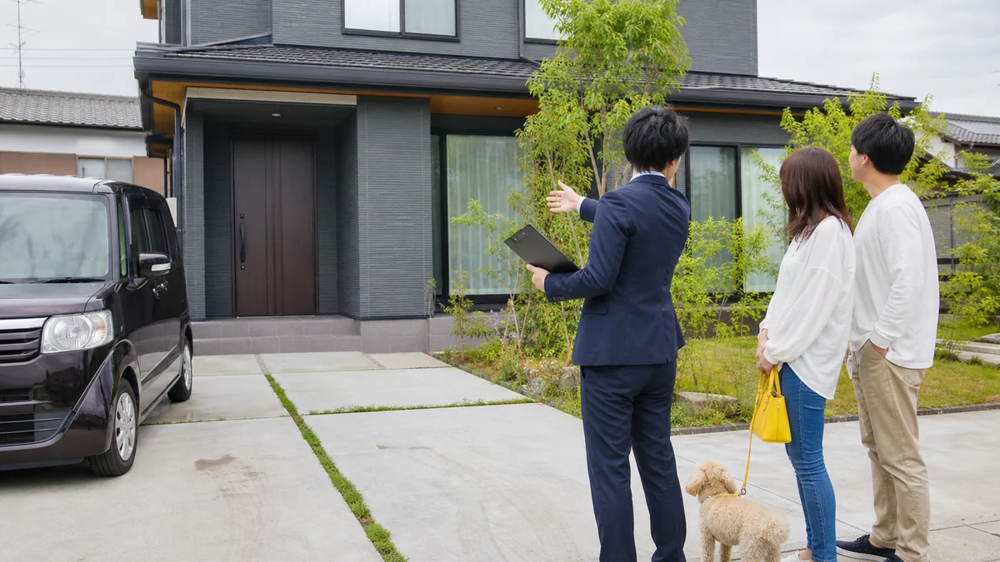
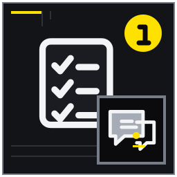
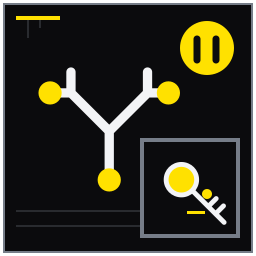

物件の魅力と制約を同数出す
広告前に事実ベースの強みと注意点を揃える。
MITSUKE RENT GUIDE 04
戸建て固有の利用範囲と暮らし方を、広告、内見、申込、契約へ矛盾なく反映させる記事。

入居条件と契約では、資料が全部そろうのを待つより、確認済み・未確認・専門家へ聞く事項を分けるほうが実務は進みます。この記事は見付の戸建てを初めて募集し、入居者像、禁止事項、審査、契約方式を決めたい所有者に向け、14の論点を現地確認と相談準備の順に整理しました。戸建て固有の利用範囲と暮らし方を、広告、内見、申込、契約へ矛盾なく反映させる記事。 結論を保証するものではなく、対象物件と契約条件に合わせて確認先を選ぶためのガイドです。
想定している検索時の疑問は、「戸建て賃貸 募集条件」「戸建て賃貸 ペット 庭」「普通借家 定期借家 違い」で募集設計を知りたい。 以下では広告上の一言で判断せず、記録、比較、相談境界、次の行動を章ごとに示します。

広告前に事実ベースの強みと注意点を揃える。
草刈り、剪定、散水、落ち葉の担当を区別する。

将来利用、期間、再契約可能性を踏まえ方式を比較する。

戸建て固有条件を明確・過不足なく記載する。
広告前に事実ベースの強みと注意点を揃える。 庭、二台駐車、独立性は魅力ですが、坂道、前面道路、古い設備も同じ募集図面に載せる必要があります。写真番号と説明文を対応させ、内見者が現地で確かめられる表現にします。強みだけを大きく見せず、暮らし始めてから負担になる条件も近くに記載します。
庭と二台駐車を強みにしつつ坂道を制約に置く。 第1章の条件を対象物件へ移すときは、一致点、相違点、未確認点を分け、写真・寸法・契約案など必要な根拠を添えます。第1章の例と違う条件こそ判断を変える材料になるため、都合のよい一致だけを選びません。
弱点を隠す表現は内見後の不信につながる。 第1章では所有者が決める希望、現地で観察できる事実、建築・法務・税務などの専門判断を混在させず、分からない事項は質問として担当者へ渡します。第1章の回答日と前提条件を残し、一般説明を対象物件の結論へ読み替えないようにします。
現地写真と対応する六項目を作る。 第1章の実施後は担当者、実施日、根拠資料、分かったこと、残った疑問を記録します。第1章の確認期限と連絡先が決まれば、結論が保留でも作業は前進しています。第1章に変更があった場合は旧記録を消さず、変更理由と承認者を追記してください。
属性名ではなく必要な設備や使い方から想定する。 想定する相手を「子育て世帯」などの属性名だけで決めると、合理的な理由のない排除につながります。個室数、在宅勤務スペース、車の利用、庭作業といった生活場面へ言い換えます。同じ条件なら同じ説明と審査手順を適用できるかも確認します。
在宅勤務で一室必要な世帯を間取りから検討する。 第2章の条件を対象物件へ移すときは、一致点、相違点、未確認点を分け、写真・寸法・契約案など必要な根拠を添えます。第2章の例と違う条件こそ判断を変える材料になるため、都合のよい一致だけを選びません。
不合理な入居差別につながる条件設定を避ける。 第2章では所有者が決める希望、現地で観察できる事実、建築・法務・税務などの専門判断を混在させず、分からない事項は質問として担当者へ渡します。第2章の回答日と前提条件を残し、一般説明を対象物件の結論へ読み替えないようにします。
合う生活場面を三つ文章化する。 第2章の実施後は担当者、実施日、根拠資料、分かったこと、残った疑問を記録します。第2章の確認期限と連絡先が決まれば、結論が保留でも作業は前進しています。第2章に変更があった場合は旧記録を消さず、変更理由と承認者を追記してください。
台数だけでなく寸法、進入、車種制限を示す。 駐車可否は台数表示だけでは不十分です。間口、奥行、最狭部、門柱、軒、量水器の位置を測り、普通車と軽自動車で切り返し回数を試します。前面道路へはみ出す、隣地を使うといった運用を前提にせず、車種制限があれば広告にも明記します。
普通車と軽自動車で切り返しが違う例を撮影する。 第3章の条件を対象物件へ移すときは、一致点、相違点、未確認点を分け、写真・寸法・契約案など必要な根拠を添えます。第3章の例と違う条件こそ判断を変える材料になるため、都合のよい一致だけを選びません。
道路上の一時駐車を前提にしない。 第3章では所有者が決める希望、現地で観察できる事実、建築・法務・税務などの専門判断を混在させず、分からない事項は質問として担当者へ渡します。第3章の回答日と前提条件を残し、一般説明を対象物件の結論へ読み替えないようにします。
枠寸法と障害物を図にする。 第3章の実施後は担当者、実施日、根拠資料、分かったこと、残った疑問を記録します。第3章の確認期限と連絡先が決まれば、結論が保留でも作業は前進しています。第3章に変更があった場合は旧記録を消さず、変更理由と承認者を追記してください。
草刈り、剪定、散水、落ち葉の担当を区別する。 「庭は入居者管理」だけでは、高木剪定、害虫、散水、落ち葉、台風後の倒木を誰が担うか分かりません。日常除草と危険作業を分け、対象範囲を写真へ書き込みます。境界木や越境枝は所有関係を確認し、借主だけへ一律に負担させないようにします。
日常除草は入居者、高木剪定は貸主の案を検討する。 第4章の条件を対象物件へ移すときは、一致点、相違点、未確認点を分け、写真・寸法・契約案など必要な根拠を添えます。第4章の例と違う条件こそ判断を変える材料になるため、都合のよい一致だけを選びません。
危険作業や境界木を一律に入居者負担としない。 第4章では所有者が決める希望、現地で観察できる事実、建築・法務・税務などの専門判断を混在させず、分からない事項は質問として担当者へ渡します。第4章の回答日と前提条件を残し、一般説明を対象物件の結論へ読み替えないようにします。
作業範囲と頻度を写真へ書き込む。 第4章の実施後は担当者、実施日、根拠資料、分かったこと、残った疑問を記録します。第4章の確認期限と連絡先が決まれば、結論が保留でも作業は前進しています。第4章に変更があった場合は旧記録を消さず、変更理由と承認者を追記してください。
種類、室内飼育、庭利用、清掃、追加条件を検討する。 ペット条件は種類、頭数、成長後の大きさ、室内飼育、庭利用、臭気・傷対策まで分けます。小型犬一匹と猫二匹では床や脱走防止の確認点が違います。追加費用や原状回復の特約は当然に有効と決めず、理由と範囲を宅建業者等と点検します。
小型犬一匹と猫二匹で床・臭気対策を比べる。 第5章の条件を対象物件へ移すときは、一致点、相違点、未確認点を分け、写真・寸法・契約案など必要な根拠を添えます。第5章の例と違う条件こそ判断を変える材料になるため、都合のよい一致だけを選びません。
特約の有効性や原状回復負担を一方的に断定しない。 第5章では所有者が決める希望、現地で観察できる事実、建築・法務・税務などの専門判断を混在させず、分からない事項は質問として担当者へ渡します。第5章の回答日と前提条件を残し、一般説明を対象物件の結論へ読み替えないようにします。
認める条件と相談事項を分ける。 第5章の実施後は担当者、実施日、根拠資料、分かったこと、残った疑問を記録します。第5章の確認期限と連絡先が決まれば、結論が保留でも作業は前進しています。第5章に変更があった場合は旧記録を消さず、変更理由と承認者を追記してください。
賃貸対象と所有者保管区域を図面で明示する。 母屋、物置、離れ、屋外倉庫のどこまでを貸すか、平面図と鍵番号で示します。貸主の荷物を一部に残す案では、入居者が触れない区画の安全、湿気、出入り方法も検討します。貸主が随時取りに行く運用は避け、立入りが必要な場合の連絡手順を決めます。
屋外倉庫の半分だけ貸す案の鍵管理を考える。 第6章の条件を対象物件へ移すときは、一致点、相違点、未確認点を分け、写真・寸法・契約案など必要な根拠を添えます。第6章の例と違う条件こそ判断を変える材料になるため、都合のよい一致だけを選びません。
貸主荷物を置くことで安全・管理上の問題が出ないか確認する。 第6章では所有者が決める希望、現地で観察できる事実、建築・法務・税務などの専門判断を混在させず、分からない事項は質問として担当者へ渡します。第6章の回答日と前提条件を残し、一般説明を対象物件の結論へ読み替えないようにします。
対象範囲を内見資料へ着色する。 第6章の実施後は担当者、実施日、根拠資料、分かったこと、残った疑問を記録します。第6章の確認期限と連絡先が決まれば、結論が保留でも作業は前進しています。第6章に変更があった場合は旧記録を消さず、変更理由と承認者を追記してください。
修理対象となる設備か無償貸与物かを契約前に確認する。 エアコン、照明、温水洗浄便座などは、賃貸設備か無償貸与の残置物かで故障時の対応が変わります。名称だけでなく型番、年式、作動確認日、修理対象かを設備表へ記載します。古い機器を残すなら、撤去時期と費用負担も契約前に説明します。
古い照明とエアコンの扱いを個別に決める。 第7章の条件を対象物件へ移すときは、一致点、相違点、未確認点を分け、写真・寸法・契約案など必要な根拠を添えます。第7章の例と違う条件こそ判断を変える材料になるため、都合のよい一致だけを選びません。
名称だけで修繕義務を断定せず契約書へ反映する。 第7章では所有者が決める希望、現地で観察できる事実、建築・法務・税務などの専門判断を混在させず、分からない事項は質問として担当者へ渡します。第7章の回答日と前提条件を残し、一般説明を対象物件の結論へ読み替えないようにします。
型番・年式・扱いを設備表に記す。 第7章の実施後は担当者、実施日、根拠資料、分かったこと、残った疑問を記録します。第7章の確認期限と連絡先が決まれば、結論が保留でも作業は前進しています。第7章に変更があった場合は旧記録を消さず、変更理由と承認者を追記してください。
将来利用、期間、再契約可能性を踏まえ方式を比較する。 将来の家族利用があるから定期借家、長く貸したいから普通借家と単純には決められません。希望期間、終了後の予定、再契約の可能性を時系列で伝え、定期借家に必要な書面説明などの手続を確認します。借主の生活にも大きく影響するため、曖昧な終了見込みで選ばないことが重要です。
四年後に家族利用の可能性があるケースを置く。 第8章の条件を対象物件へ移すときは、一致点、相違点、未確認点を分け、写真・寸法・契約案など必要な根拠を添えます。第8章の例と違う条件こそ判断を変える材料になるため、都合のよい一致だけを選びません。
定期借家には法定の手続があり、書式だけの選択にしない。 第8章では所有者が決める希望、現地で観察できる事実、建築・法務・税務などの専門判断を混在させず、分からない事項は質問として担当者へ渡します。第8章の回答日と前提条件を残し、一般説明を対象物件の結論へ読み替えないようにします。
宅建業者や法律専門家へ希望と理由を伝える。 第8章の実施後は担当者、実施日、根拠資料、分かったこと、残った疑問を記録します。第8章の確認期限と連絡先が決まれば、結論が保留でも作業は前進しています。第8章に変更があった場合は旧記録を消さず、変更理由と承認者を追記してください。
必要書類、保証、入居希望日、利用目的を一貫して確認する。 申込時は入居希望日、利用目的、同居者、車両、保証、法人契約の希望を同じ様式で受けます。審査に不要な個人情報まで集めず、閲覧者と保管先を限定します。結果だけでなく、追加資料の依頼者と回答期限を記録し、申込者間で説明手順を変えないようにします。
転勤家族が法人契約を希望する例を扱う。 第9章の条件を対象物件へ移すときは、一致点、相違点、未確認点を分け、写真・寸法・契約案など必要な根拠を添えます。第9章の例と違う条件こそ判断を変える材料になるため、都合のよい一致だけを選びません。
審査基準の詳細や個人情報を不用意に共有しない。 第9章では所有者が決める希望、現地で観察できる事実、建築・法務・税務などの専門判断を混在させず、分からない事項は質問として担当者へ渡します。第9章の回答日と前提条件を残し、一般説明を対象物件の結論へ読み替えないようにします。
確認項目と保管担当を決める。 第9章の実施後は担当者、実施日、根拠資料、分かったこと、残った疑問を記録します。第9章の確認期限と連絡先が決まれば、結論が保留でも作業は前進しています。第9章に変更があった場合は旧記録を消さず、変更理由と承認者を追記してください。
面積、築年、設備、交通、費用を根拠資料と照合する。 面積、築年、交通、費用、設備は登記・図面・現地・契約条件と照合します。「駐車二台可」なら車種制限を併記し、未確認設備を利用可能と表示しません。通学の安全、将来の静けさ、災害時の無被害など、貸主が保証できない表現も避けます。
駐車二台可の条件に車種制限を追記する。 第10章の条件を対象物件へ移すときは、一致点、相違点、未確認点を分け、写真・寸法・契約案など必要な根拠を添えます。第10章の例と違う条件こそ判断を変える材料になるため、都合のよい一致だけを選びません。
将来の通学、騒音、災害安全を保証する表現を避ける。 第10章では所有者が決める希望、現地で観察できる事実、建築・法務・税務などの専門判断を混在させず、分からない事項は質問として担当者へ渡します。第10章の回答日と前提条件を残し、一般説明を対象物件の結論へ読み替えないようにします。
公開前に現地と募集図面を突合する。 第10章の実施後は担当者、実施日、根拠資料、分かったこと、残った疑問を記録します。第10章の確認期限と連絡先が決まれば、結論が保留でも作業は前進しています。第10章に変更があった場合は旧記録を消さず、変更理由と承認者を追記してください。
魅力、利用範囲、設備、注意、質問の順で相互確認する。 内見は庭と駐車、賃貸対象範囲、室内設備、注意点、質問確認の順にすると戸建て特有の条件が伝わります。口頭だけで済ませず、図面と設備表に確認印を付けます。入居希望者が気にした寸法や利用方法は、申込後の説明にも引き継ぎます。
庭から室内へ回り最後に道路条件を確認する。 第11章の条件を対象物件へ移すときは、一致点、相違点、未確認点を分け、写真・寸法・契約案など必要な根拠を添えます。第11章の例と違う条件こそ判断を変える材料になるため、都合のよい一致だけを選びません。
口頭説明だけに依存しない。 第11章では所有者が決める希望、現地で観察できる事実、建築・法務・税務などの専門判断を混在させず、分からない事項は質問として担当者へ渡します。第11章の回答日と前提条件を残し、一般説明を対象物件の結論へ読み替えないようにします。
確認済み項目へ双方で印を付ける。 第11章の実施後は担当者、実施日、根拠資料、分かったこと、残った疑問を記録します。第11章の確認期限と連絡先が決まれば、結論が保留でも作業は前進しています。第11章に変更があった場合は旧記録を消さず、変更理由と承認者を追記してください。
戸建て固有条件を明確・過不足なく記載する。 庭管理、ペット清掃、物置利用などは一つの長い特約へまとめず、理由と対象範囲を分けます。通常損耗まで無条件に借主負担とする表現を避け、国土交通省の標準契約書や原状回復ガイドラインと照らします。読み合わせで意味が伝わらない語は平易に直します。
庭管理とペット清掃の条項を別々に扱う。 第12章の条件を対象物件へ移すときは、一致点、相違点、未確認点を分け、写真・寸法・契約案など必要な根拠を添えます。第12章の例と違う条件こそ判断を変える材料になるため、都合のよい一致だけを選びません。
特約が当然に有効とは断定せず標準契約書等と専門家判断を参照する。 第12章では所有者が決める希望、現地で観察できる事実、建築・法務・税務などの専門判断を混在させず、分からない事項は質問として担当者へ渡します。第12章の回答日と前提条件を残し、一般説明を対象物件の結論へ読み替えないようにします。
平易な言葉で読み合わせる。 第12章の実施後は担当者、実施日、根拠資料、分かったこと、残った疑問を記録します。第12章の確認期限と連絡先が決まれば、結論が保留でも作業は前進しています。第12章に変更があった場合は旧記録を消さず、変更理由と承認者を追記してください。
傷、汚れ、設備動作、鍵本数の初期状態を残す。 入居時写真は室名、方向、撮影日を付け、傷には定規や指標を添えます。床だけでなく壁、建具、水回り、庭、塀、鍵本数、設備の作動も双方で確認します。大量の画像を無秩序に保存せず、部屋別フォルダと一覧表を作って貸主・借主の控えをそろえます。
床の既存傷に定規を添えて撮る例を示す。 第13章の条件を対象物件へ移すときは、一致点、相違点、未確認点を分け、写真・寸法・契約案など必要な根拠を添えます。第13章の例と違う条件こそ判断を変える材料になるため、都合のよい一致だけを選びません。
撮影日時や場所が不明な画像だけでは比較しにくい。 第13章では所有者が決める希望、現地で観察できる事実、建築・法務・税務などの専門判断を混在させず、分からない事項は質問として担当者へ渡します。第13章の回答日と前提条件を残し、一般説明を対象物件の結論へ読み替えないようにします。
室名付きフォルダへ双方の控えを保存する。 第13章の実施後は担当者、実施日、根拠資料、分かったこと、残った疑問を記録します。第13章の確認期限と連絡先が決まれば、結論が保留でも作業は前進しています。第13章に変更があった場合は旧記録を消さず、変更理由と承認者を追記してください。
家族が承認した条件と変更履歴を残す。 確定したペット、駐車、庭、契約期間、対象範囲には決定日と承認者を付けます。広告公開後に条件を変えた場合は旧版を残し、どの申込者へどの条件を説明したか追えるようにします。カルテは契約成立の代わりではなく、担当者間の条件ずれを防ぐ索引として使います。
ペット可否、契約期間、庭分担の決定日を記録する。 第14章の条件を対象物件へ移すときは、一致点、相違点、未確認点を分け、写真・寸法・契約案など必要な根拠を添えます。第14章の例と違う条件こそ判断を変える材料になるため、都合のよい一致だけを選びません。
カルテ記録だけで契約条件が成立するわけではない。 第14章では所有者が決める希望、現地で観察できる事実、建築・法務・税務などの専門判断を混在させず、分からない事項は質問として担当者へ渡します。第14章の回答日と前提条件を残し、一般説明を対象物件の結論へ読み替えないようにします。
確定条件を賃貸相談担当へ共有する。 第14章の実施後は担当者、実施日、根拠資料、分かったこと、残った疑問を記録します。第14章の確認期限と連絡先が決まれば、結論が保留でも作業は前進しています。第14章に変更があった場合は旧記録を消さず、変更理由と承認者を追記してください。
入居条件と契約の準備状況を確認するため、完了・未完了だけでなく根拠資料の場所も記してください。
需要や物件状態によるため一律ではない。まず現況を変えずに相談材料をそろえると、必要な作業の順番を決めやすくなります。
日常管理と高木・危険作業を区別し、契約で明確にする。築年数だけで可否を決めず、安全性、設備、費用、募集条件を対象物件ごとに確認します。
法定手続や契約内容、通知等の確認が必要で、個別案件を一律に断定できない。相談に参加できることと契約権限は別なので、名義と委任の状況を資料で確かめます。
個人情報の取扱いや保証会社・仲介会社との分担を確認し、必要範囲に限定する。想定賃料と安全上必要な工事を先に整理し、印象改善工事は回収可能性を見て判断します。
設備か残置物か、使用可否、故障時の扱いを募集・契約前に明確にする。カルテは未確認事項を専門家へ渡す索引であり、法務・税務・建物診断の結論そのものではありません。
制度や手続は更新されるため、公開元の最新情報と対象範囲を確認してください。リンク先の説明は個別物件への判断を代替しません。
本記事は2026年8月時点の一般的な情報整理と相談準備を目的としています。対象物件の安全性、適法性、契約条件、税務上の取扱い、修繕の必要性を診断・保証するものではありません。法務は弁護士・司法書士、税務は税務署・税理士、建物の安全や工事は建築士・施工業者、行政制度は担当窓口へ個別に確認してください。富士ヶ丘サービス株式会社は宅地建物取引業者として、戸建て賃貸の現況整理、募集条件、管理方法、売却を含む選択肢の相談を承ります。